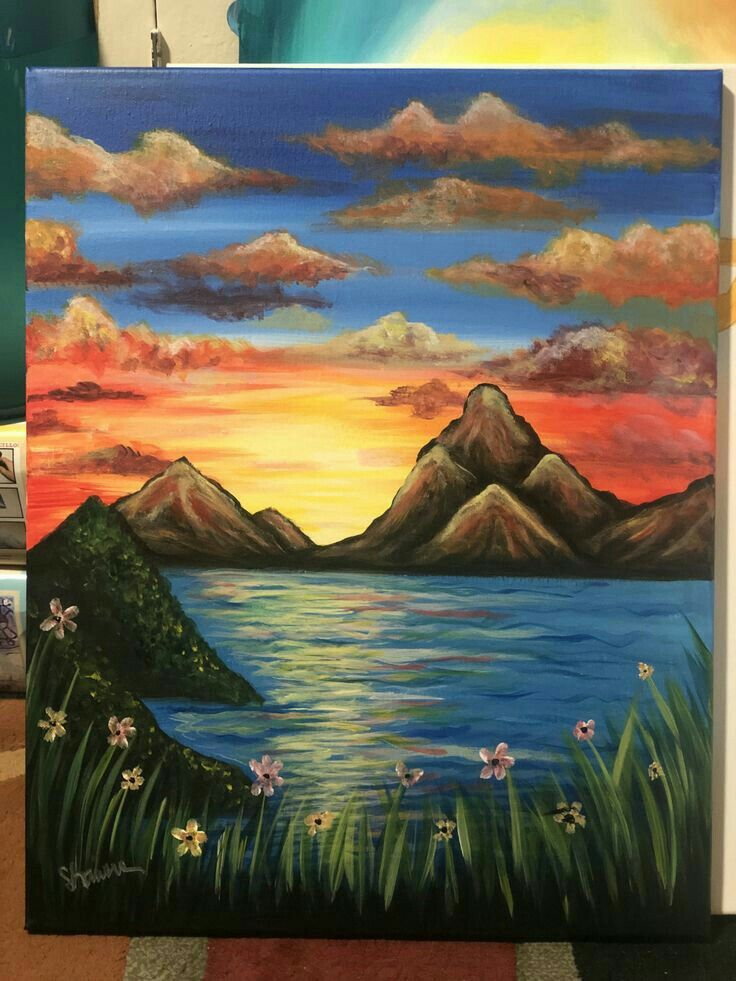
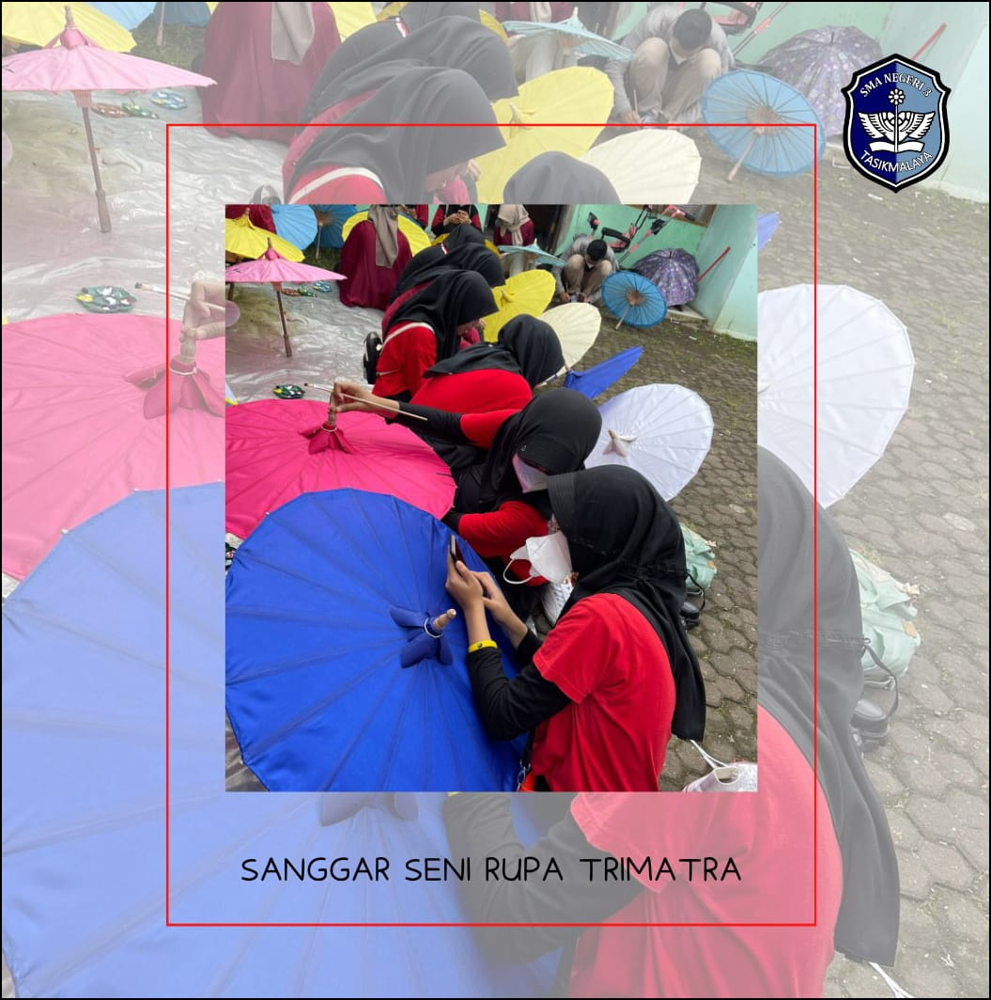
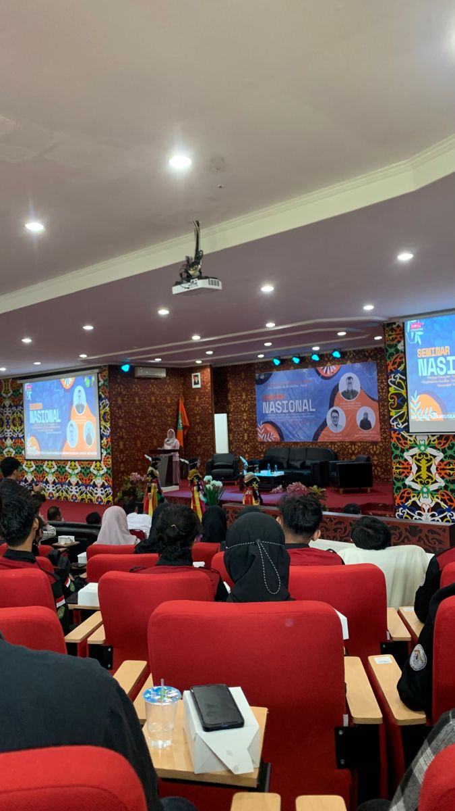
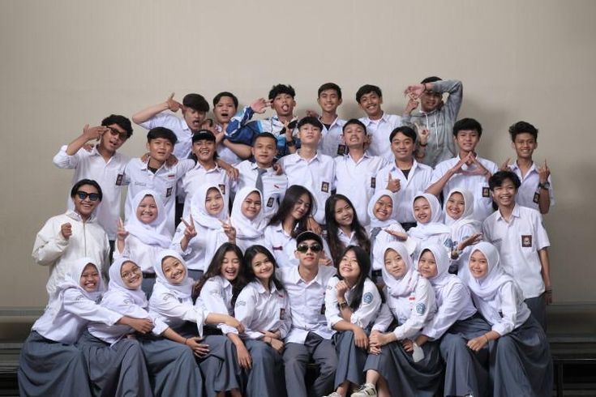

Galeri Kreativitas SSRT
Jelajahi karya terbaik anggota kami, mulai dari sketsa hingga digital art, serta dokumentasi perjalanan seni kami.
Karya Terbaik


Dokumentasi Kegiatan



Foto Anggota & Guru
